01 / build
Custom software
Purpose-built apps, websites and internal tools that make everyday work clearer.
e.g. TipOut cut shift-end tip math by about 90%.
Based in Southern Illinois, USACentral Time
Where I've built
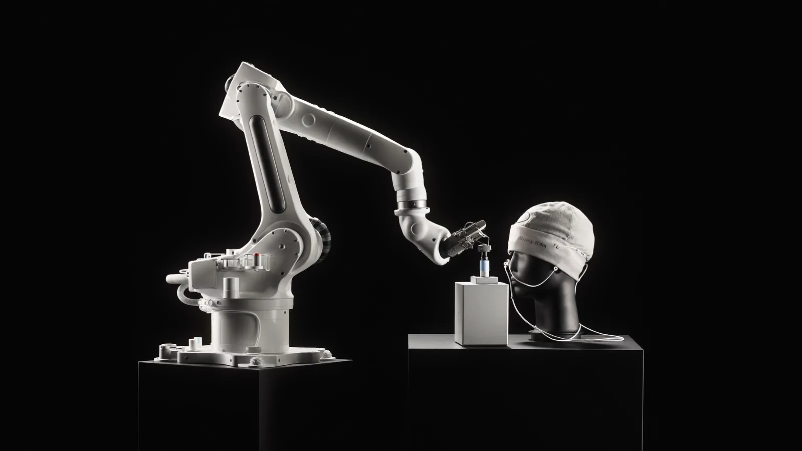
Real EEG motor-imagery data drives a robot arm. Built at the ASU West Valley Game Jam.
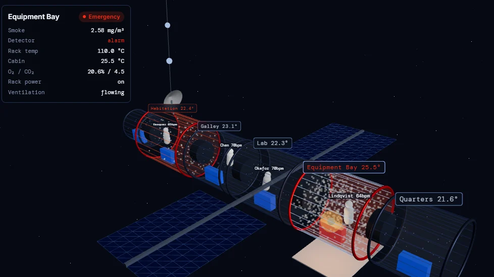
An AI mission companion for astronauts. My practice build for NASA Space Apps.
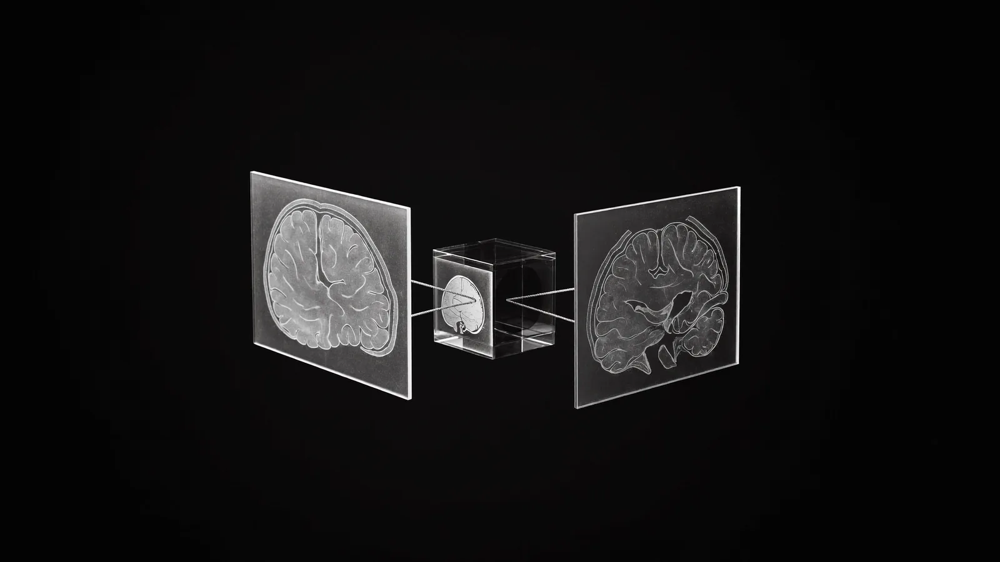
Federated MRI tumor classification, ~97% accuracy, deployed across Google Cloud nodes.
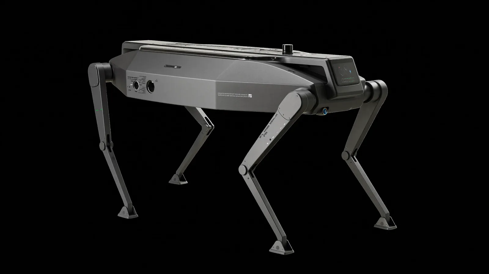
Talking to a robot dog: local LLMs and VLMs wired into ROS 2, LiDAR and camera.
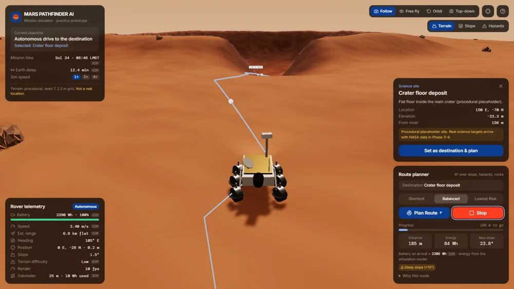
A 3D Mars expedition planner on real Jezero crater terrain, with A* routing and a rover autopilot.
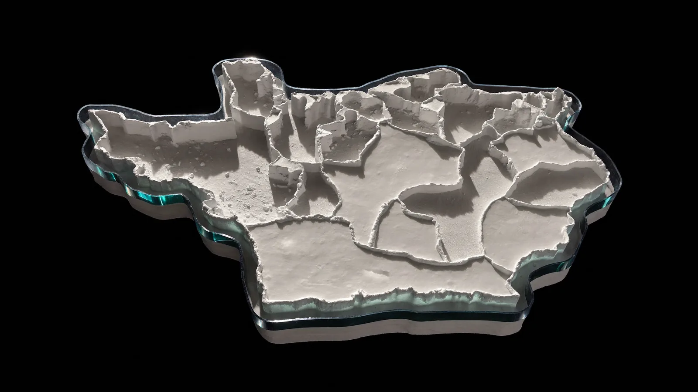
Gerrymandering analysis on Illinois voting districts with PostGIS. Senior design.
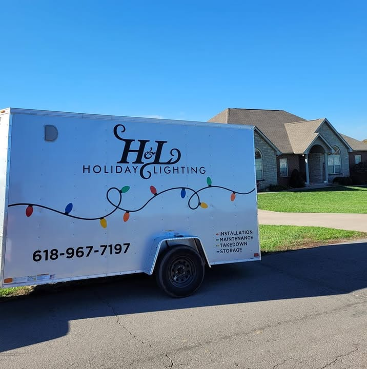
Client site and lead workflow for a Southern Illinois lighting business.
Rebuilt the company site with an integrated conversational voice agent.
TipOut cut tip math ~90%, plus dart scoring, Shot Roulette and a recipe book.
Recovery tracking in React and Supabase, with SMART on FHIR integration work.
Tracks neurological vision symptoms over time. Not a diagnostic device.
AI academic advising with visual degree planning across 14+ programs.
PySpark ETL on Dataproc and BigQuery analysis of a 500+ column dataset.
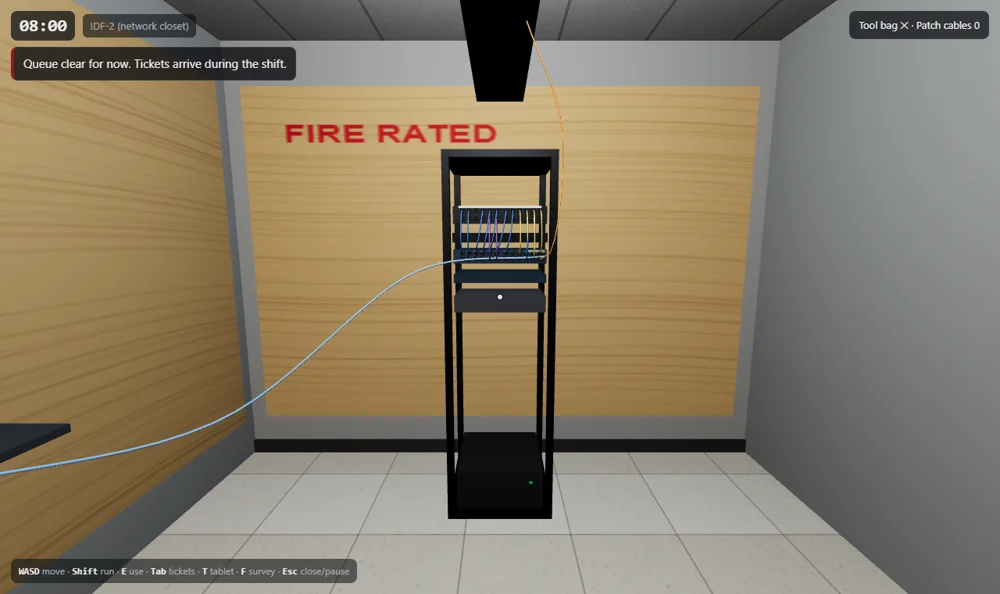
A 3D game of my SIU network job: tickets, VLANs, Cisco and Extreme.
Can EEG reveal intent or identity? Ongoing research, no results claimed yet.
01 / build
Purpose-built apps, websites and internal tools that make everyday work clearer.
e.g. TipOut cut shift-end tip math by about 90%.
02 / integrate
AI connected to your site or workflows, so people find answers and skip repetitive tasks.
e.g. Agentic workflows at Avaiz Automations.
03 / converse
Voice experiences that answer common questions and guide customers to a next step.
e.g. The voice agent on the COET Systems site.
04 / draft
Send a few measurements, a description or some photos, and I'll turn them into a clean CAD drawing with AI-assisted tools.
e.g. A server-room floor plan and 3D layout, drawn as DXF.
Every layer of the stack, hands-on.
The robot arm's busy, so it's your turn. Draw something!
IT tech → network → AI & robotics.
thinker.tinkerer.builder.
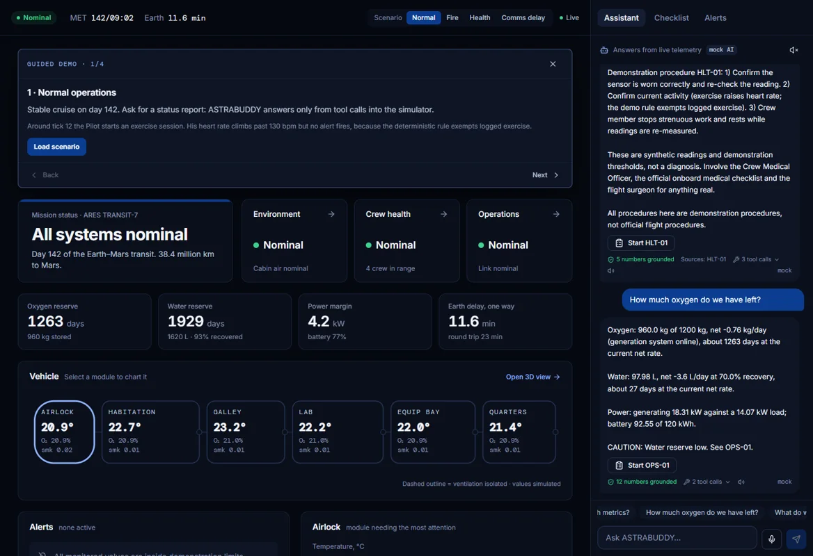
Saluki NetOps: work tickets, fix VLANs, escalate bad jacks to Telecom.
Youth soccer coach and referee. Grew up on rugby, football, soccer, baseball and competitive cheer. Humane-shelter volunteer.
fix in progress · Microsoft · VS Code
Issue #344168: turning agent tools off in one workspace turned them off in every workspace, because the switch was saved in application-wide storage. Moved it to per-workspace storage with a one-time migration so existing settings carry over without leaking, plus regression tests.
fix in progress · Netflix · metaflow-ui
MF_DEFAULT_TIME_FILTER_DAYS was parsed with parseInt(value, 30), a radix of 30 instead of 10, so setting 14 days gave 34. Parsed it in base 10, ignored values that aren't a positive number of days, and added Cypress tests.
pull request · Netflix · metaflow-ui
Pointed the UI Service links at services/ui_backend_service, fixed a dangling sentence and typos, turned the METAFLOW_HEAD example into a full docker run command, and documented MF_DEFAULT_TIME_FILTER_DAYS.
triage · Google · YouTube Data API v3
A verified Primary Owner who picked their Brand Account at sign-in still got HTTP 401 youtubeSignupRequired from channels.list(mine=true). Narrowed it to two checks: whether the token's identity is the Brand Account, and whether the channel is attached to that Brand Account.
in progress · open source · Google Research
Engineering Python-based improvements to machine-learning research infrastructure, and building automated testing and evaluation workflows that improve reproducibility, numerical correctness and model reliability.
open source · pull requests
work · SIU X-Lab
Found and removed an unnecessary SDK licensing dependency, avoiding about $14,000.
work · SIU X-Lab
Built containerized research environments in Podman so the team could reproduce runs.
work · SIU X-Lab
Wired natural-language commands to the Go2 through OpenClaw, ROSClaw, rosbridge, ROS 2 and Cyclone DDS.
work · SIU X-Lab
Explored camera, LiDAR and vision-language perception for navigation, following and obstacle avoidance.
work · SIU X-Lab
Helped write the lab’s technical documentation.
project
Natural-language control of a robot dog: local LLMs and VLMs into ROS 2, LiDAR and camera.
event · Phoenix, AZ · Oct 2026
Built and demoed NeuroReach.
project
BCI analysis and simulation: real EEG motor-imagery data decoded to drive a simulated robot arm.
GitHub ↗event · Phoenix, AZ · Oct 2026
Team mentor and volunteer at ASU / Project Humanities: visited teams, answered technical questions, checked documentation.
research
Can real EEG reveal motor intent or who a participant is? Leakage-safe evaluation, research in progress.
GitHub ↗project
An MCP server that lets an AI agent send movement commands to the Unitree Go2.
research
Abnormal-vs-normal EEG classification on the real TUH corpus, with subject-safe evaluation.
GitHub ↗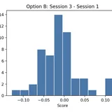
research
Do EEG brain networks differ between stronger and more limited recovery after mild TBI?
research
Research-only ML on radiologist-labeled head CTs, compared against report wording.
research
Unsupervised phenotyping of a synthetic TBI cohort with K-means, DBSCAN and PCA.
GitHub ↗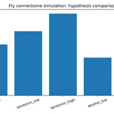
research
A FlyWire-derived connectome under serotonin-like and alcohol-like hypotheses. Exploratory model.
work · Avaiz Automations
Built AI-powered automation systems and agentic workflows for business processes.
work · Avaiz Automations
Built conversational voice agents with ElevenLabs, APIs and workflow platforms.
work · Avaiz Automations
Prototyped practical AI solutions for client and business workflows.
project
AI mission companion for astronauts with a live 3D vehicle. NASA Space Apps prep.
event · upcoming · Nov 2026
Coming up, Nov 14–15. The real entry gets built at the event.
event · planned · Jan 2027
Seattle's VR / AR hackathon, building XR apps over a weekend. Planned for January 2027.
event · planned · Feb 2027
Stanford's hackathon, Feb 12–14, 2027, on Stanford's campus. Planned.
event · virtual · Broward County, FL
Hands-on session building AI agents with Google tools.
event · virtual · Chapel Hill, NC
Using AI to help small businesses.
event · Kansas City
A meetup on using technology for social good.
project
3D Mars expedition planner on real Jezero crater terrain, with A* routing and a rover autopilot.
project
An instant roof-estimate widget for roofing company websites.
project
Fit-test hub prototype with an ElevenLabs conversational AI widget.
project
Softball pitching metrics: 4D Motion for the body, PitchLogic for the ball, AI-drafted plans.
project
A scroll-driven landing page concept for Avaiz Automations.
class · CS 430
An AI business platform for automation services, with Stripe checkout and a client portal.
work · Handshake AI
Trained and evaluated AI model outputs, including technical and programming tasks.
freelance
Rebuilt the company site with an integrated conversational voice agent.
project
Client site and lead workflow with Google Sheets and email notifications.
GitHub ↗project
Website for a Du Quoin community event, with a live view of reservations.
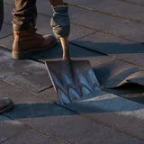
project
Redesign concept for a Benton, IL roofer where scrolling tears the roof off.
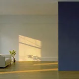
project
Site concept for a veteran-owned cleaning company where scrolling cleans the kitchen.
work · SIU network
Verified 2,000+ switch-port and access-point locations and connections across campus.
work · SIU network
Corrected every incorrect port and AP record I found during the audit.
work · SIU network
Wrote Python scripts to speed up the documentation work and other repetitive tasks.
work · SIU network
Ran a wireless survey of an SIU building with Ekahau.
work · SIU network
Traced the campus police 911 dispatch center’s jacks and got them plugged in correctly.
work · SIU network
Helped restore the dispatch center’s call-recording software.
work · SIU network
Layer 2 and switch configuration on Cisco and Extreme Networks gear.
work · SIU network
L3 troubleshooting, plus switching, connectivity and excessive-traffic incidents.
work · SIU network
Created and maintained DHCP entries for campus devices.
work · SIU network
Tested ports and managed cabling in network closets.
work · SIU network
Worked network requests through the Tikit ticketing system.
event · Chicago
Workshop with hands-on labs in cluster configuration and advanced computing.
class · operating systems
An OS dynamic memory allocation simulator. My instructor kept using it to teach the class after I took it.
project
A personal video game project built around computer vision.
event · SIU · 2024–2025
Represented the College of Engineering, Computing, Technology, and Mathematics at SIU.
project
A 3D game of my SIU network job: tickets, VLANs, Cisco and Extreme CLIs.
class · machine learning
Federated MRI classification with Flower, ~97% accuracy, deployed on Google Cloud with Terraform.
GitHub ↗project
A network digital twin and source of truth: sites, devices, VLANs, subnets, racks and cables.
project
Lightweight network-health monitor: ping, latency, packet loss and TCP ports in a web dashboard.
project
Terraform-built private VPC, IAP-only SSH, least privilege and incident drills.
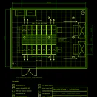
project
A server-room floor plan and 3D layout generated in Python as DXF.
project
A course review site for SIU students.
class · CS 491
A pygame game built as the final project for Advanced Python.
class · CS 491 data eng
A Google Cloud Function that pulls trip data from BigQuery, transforms it with pandas and writes to Cloud Storage.
class
Correlation analysis between lunar phases and earthquake data, with a 3D visualization.
project
A Python port scanner built on nmap that reports host state and open services.
project
Real-time webcam face detection with an OpenCV DNN model.
class · senior design
Senior design: gerrymandering analysis on Illinois voting districts with PostGIS.
project
AI academic advising with visual degree planning across 14+ programs.
class · data engineering
PySpark ETL benchmarked across Google Cloud Dataproc cluster configurations.
class · data engineering
Ten analytical BigQuery SQL queries over a 500+ column public-health dataset.
freelance
TipOut cut tip math ~90%, plus dart scoring, Shot Roulette and a recipe book.
project
Recovery tracking in React and Supabase, with SMART on FHIR integration work.
project
Tracks neurological vision symptoms over time. Not a diagnostic device.
project
Tracks job searches and applications against a profile.
*Where it all started.
work · John A. Logan
Helped build an inventory script for tracking IT assets.
work · John A. Logan
Technical support for 5,000+ users.
work · John A. Logan
Handled tickets and asset records in KACE.
work · John A. Logan
Supported computer labs, imaging, software deployment and devices.
work · John A. Logan
Project manager for a Collegiate Cyber Defense Competition project.
class · CS 221
My first personal web page, from day one of CS 221.
class · CS 225
An object-oriented Month class and client program in Java.
class · CS 330
The coin change problem solved with dynamic programming in Python.